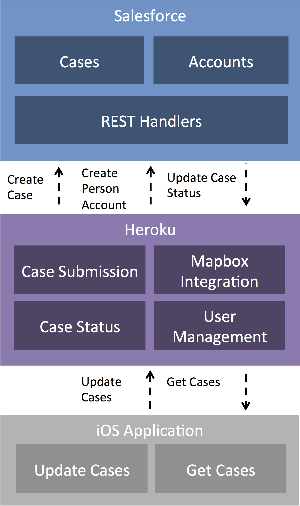

Ka-ze uses a number of different architectural components to create an end-to-end experience.
Our web portal is built on Ruby on Rails using tools such as RestForce and Devise. We use a number of Javascript libraries, including Bootstrap, to provide a more responsive and tailored user interface. We also use Mapbox to allow the user to select a location on a map.
We use RestForce to synchronize account and case data (via the Force.com APIs) with Salesforce.
Our IOS application, written in Swift, pulls case information from Heroku and surfaces it using native UIKit components. This allows a user to review open cases near them, comment on them and potentially close the cases.
Salesforce powers our internal employee experience. Users can log into Salesforce to review and update cases. We use a trigger and asynchronous Apex (stored within an unmanaged package) to push case updates back to Heroku.